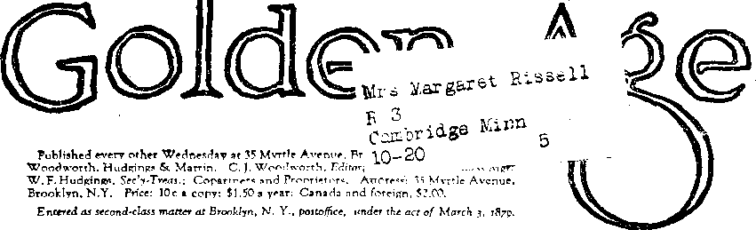

'I
Volume I
Temporary change in size and appearance of this magazine is due to shortage of print paper in New York City. See note below.
New York, Wednesday, September 1, 1929
Number 25
BORN in the throes of revolution, the Government of the United States of America rests not upon bayonets, the divine right of kings, the sanction of ecclesiastical politicians or the tyranny of financial potentates, but upon the will of the American people, a will which functions at the ballot box in obedience to public opinion. If the time ever comes, or if it has already come, when in America the right of free and public discussion of all questions is forbidden, and a rule of force or craft or both takes the place of the rule of reason, then the American Republic as a democracy ceases to exist. We give a few quotations, which might be multiplied indefinitely, showing the truth of these statements.
"They that can give up essential liberty to obtain a little temporary safety deserve neither liberty nor safety.”—Benjamin Franklin.
“It is a Constitutional right of this people to canvass public measures and public mon. This privilege I shall defend in time of war and in time of peace.”—Daniel Webster.
“How shall we ever learn toleration for what we do not believe ? The last lesson a man ever learns is that liberty of thought and speech is the right for all mankind; that the man who denies every artidte of our creed is
Every Order-Loving person should read “The Distress of 'Nations, Cause—Remedy” and “The Beast at War”, in a subsequentissueof this Journal, by Judge Rutherford.
Explanatory Note
The shortage of paper still continues, but boginping October first The Golden Age will resume its usual size and increase the price fifty cents to cover the greatly increased costs. This will make the price after October first. 1>2.GO in the United States and .$2.50 in Canada and in foreign territory. Meantime, however, subscription- and renewals will be accepted, until September thirtieth inclusive, at <he present price—■ $1.50 domestic, and S2.00 Canada and foreign.
to be allowed to preach just as often and just as loud as ourselves. We have learned this—have been taught it by persecution on the question of slavery. No matter whose the lips that would speak they must be free and ungagged. Let us remember that he does not really believe his own opinions who dares not give free scope to his opponent.”—Wendell Phillips, at the twentieth anniversary of the Garrison mob in Boston.
“If there is one thing we love more than another in the United States, it is that every man should have the privilege unmolested to utter the convictions of his mind.” —Woodrow Wilson, President of the United States.
“I have a right, I think, to advocate in the way of free speech, the altering and reforming of this Government of ours into either a socialism or a monarchy if I choose" to do so; and no law of this country should close my mouth.”—Thomas E. Marshall, ■ Vice-President of the United States, in address to representatives of The Associated Press, Waldorf - Astoria Hotel, New York, April 20, 1920.
“To punish men for their beliefs is contrary to the spirit of American institutions and American history. It is right to punish overt acts; but the only way to deal with beliefs is to meet them, expose their fallacy and present the facts which prove them wrong. That is the American way.”—Calvin Coolidge, Governor of Massachusetts, Republican candidate for Vice-President of the United States. >
“The tendency to crave and assert arbitrary' power, to
use power—either economic or political power—ruthlessly, is more apparent with us than devotion to the cause of liberty. The true method is to trust the truth to find the remedy. Does a grievance exist? If it does not. then show that it does not. If it is exaggerated, limit it to the facts. To the degree that it exists, search for the remedy. If a wrong remedy is proposed, expose it. If the remedy proposed is worse than the grievance, demonstrate it. The motto for democracy must be, Educate, educate, educate. You can find no other security than the conscience and intelligence of the people.” [The purpose of this journal is to educate the people.]
“But you cannot at once educate and stifle opinion. There is hope in the free air. There is tonic in confidence in ultimate success of what you strongly believe to be true; but the policy of denying free expression of political opinions is death to the Republic : for that expression is its vital force. The practice of putting large discretionary powers at the disposal of officers needs a curb. The patriot in peace demands a government upon established principles; and he should always be ready to contest officialism and bureaucracy, with its readiness to suppress individual freedom by capricious administrative action and to install in departments of a supposed free government what is nothing short of a Supreme Court of the United States.
“The law has no business whatever to interfere with any individual’s opinion nor with any organization to spread that opinion. Opinion is absolutely free in this country. In so far as it is not we are defective in liberty, which is supposed to be one of our inalienable rights. If I attack a priest, the courts should punish me for plain assault, and not for being a Presbyterian.”—Dr. Frank Crane, noted editorial writer, in the New York Globe.
was rescued only after the train had gone twenty miles.
And in no possible way can we afford to pass by such a calm, dispassionate arraignment as is contained in the address of Frank I. Cobb, editor of the New York World, December 11, 1919, before the Women’s City Club of New York. Mr. Cobb is now acknowledged as the greatest newspaper man in America; and his words, from which we make selections, are those of a thoughtful and experienced man. He said:
“Thomas Jefferson said that ‘The spirit of resistance to government is so valuable on certain occasions that I wish it always to be kept alive. It will often be exercised when wrong, but better so than not to be exercised at all.’ If the author of the Declaration of Independence were to utter such a sentiment today the Post Office Department could exclude him from the mail; grand juries could indict him for sedition and criminal syndicalism ; legislative committees could seize his private papers and search them for evidence of Bolshevism, and United States Senators would be clamoring for his deportation on the ground that he had been tainted with the ribald doctrines of the French Revolution, and should be sent back to live with the rest of the terrorists.”
“This theory that it is the duty of the government to protect the people from propaganda is Prussianism. It was the gospel of his Imperial Majesty, the German Kaiser.”
“The moment that a republican form of government sets itself up as the nursemaid of the people, to train their immature minds to suit its own purposes, and to guard them from all influences that it considers contaminating, we already have a revolution and a revoln-tion backward, a revolution by usurpation.”
,.«s
WE CAN scarcely afford to ignore such instances of suppression of. free speech as that at Ardmore, Oklahoma, where United States Senator James A. Reed was rotten-egged, and the electric wires were cut, when he attempted to give an address on the League of Nations.
We certainly cannot pass by in silence the worse offense at Ortonville, Minnesota, November 17, 1919, when Congressman Ernest Lundeen was arrested by Sheriff Gowan as he was about to begin his speech on the same Subject, was taken to the railway station, pushed into a refrigerator car and the door locked, and
“God forbid that our supreme achievement in this ., war should be the Prussianizing of ourselves.”
“The policy of repression that has been generally adopted by governors, mayors and police officials—in some cases by federal authority—to meet this propaganda of radicalism is fatal. Two thousand years of history bear witness to its folly. Nobody ever succeeded in bettering the weather by putting the thermometer in jail, and nobody will ever remove the causes of unrest and discontent by trying to suppress their manifestations.”
The Times-Independent of Streator, Ulinpis, after noting the attempt made in that city to suppress a lecture on economics by Scott Nearing, and after admitting that though not an advocate of Nearing’s philosophy the editor had received great benefit from the address and wished that every person in the city might have
■ t
enjoyed it, concluded with the following observation :
“We fought the war to kill tyranny and despotism. We seem now to be in danger of establishing the most sinister of all tyrannies, a dictatorship of force to curb the free, spontaneous expression of ideas. We are getting hysterical and losing our sense of perspective, damning everybody who does not wear a conventional label. It is one thing to deport aliens who repudiate our institutions and preach violent resistance to them and quite another to look with suspicion on every liberal-minded person who seeks drastic reforms, instead of being content to platitudinize about them.”
ERHAPS the worst form of suppression of free speech is that form of suppression which silences important news, information of vital interest to all the people because it affects them financially or socially or spiritually, and which by artificial playing up of murders, sports and other items of little or no real value keeps the people from giving any serious attention to the things that are of real importance to them.
But the debauchment of the press goes further than the suppression of important news and the magnifying of unimportant news. There is almost no limit to the damage that can be done to a just cause by its deliberate misrepresentation heralded to millions of people through thousands of widely circulated sheets in the same way and on the same day.
Mr. Cobb, in the great address to which we have referred, even went so far as to say that during the war “Government suppressed the truth, government distorted the truth; government lied glibly and magnificently when occasion seemed to require”.
Not out of harmony with Mr. Cobb’s statement is that of Judge George W. Anderson in an address before the Harvard Liberal Club in Boston in January. Judge Anderson was District Attorney in-Boston while the scare over German spies was at its height, and therefore had the best of opportunities to know the facts. He said: * .
“I assert as my best judgment, grounded on the information that I can get, that more than 99% of the advertised and reported pro-German plots never existed. I think it is time that publicity was given to this Anew. I doubt the Red menace having more basis in fact that the pro-German peril. I assert the significant fact that
many of the same persons and newspapers that were faking pro-German plots are now promoting ‘the Red Terror’. There are Reds; probably there are dangerous Reds. But they are not half as dangerous as the prating pseudo-patriots who under the guise of Americanism are preaching murder, ‘shooting-at-sunrise’, and to whom our church parlors and other public forums have hitherto been open.” , _
In view of what happened in the primaries of Michigan and other states no one doubts that if the voters of the Republican party could have had their way they would have chosen as their candidate for President Hiram W. Johnson,' United States Senator from California; but he is not as acceptable to Wall Street as a man who will stand in any position without hitching, and who can be trusted to do at all times exactly as he is told by the men higher up. Senator Johnson, in a speech delivered January 13,1920, before the Brooklyn Republican County Committee, gave his opinion of the condition of a large section of the press in this country in the ' following remarks:
“The fathers of this country recognized, and none, since has dared to differ with them, that'a republic such as ours, where legitimate opinion of the majority rules, can last only as long as there is freedom of speech, freedom of the press and the right of the people peaceably to assemble. Public opinion is formed by a free press, peaceable assemblage and free speech. Censorship, propaganda and big business interests have made of a large part of the press anything but the medium of expression of legitimate and honest public opinion. We must, therefore, the more zealously guard free speech and the right of peaceable assemblage. We can continue ■ as a republic only by free public opinion.”
“Censorship and governmental propaganda first curtail and limit freedom and then destroy it. In the last few years we have been filching from taxpayers millions of money for governmental propaganda, not to diseemi-nate information, but to hide defects and deficiencies , and to praise what was not always praiseworthy. If any group, even a governmental group, has the right with the public funds to feed misinformation to the people, the shackling of freedom is not far distant.”
THE statement of Benjamin Franklin is still
true that “Freedom of speech is a principal -■ pillar of free government; when this support is taken away the constitution of a free society is dissolved and tyranny is erected on its ruins”. The worst of it is that the kind of tyranny that .
■ ■ • ■
r
z is inevitable is not evident on the surface. A “benevolent” tyrant who honestly believes that radical papers should be suppressed in the interests of all the people thereby extends an urgent invitation to the radicals to get into ' power by fair means or foul, and when they do get into power to suppress all the reactionary papers. It was noteworthy at Berlin that the < first seizures by the radicals were the newspaper offices. In a message to Congress President Wilson has said pointedly and truthfully: “The Seed of revolution is repression”.
Another natural effect of an attempt at suppression is the common knowledge of students of . history that every effort to suppress a teaching
;• greatly extends the influence of that teaching
because it whets the public’s curiosity in the • doctrines banned. When the Germans invaded Belgium and suppressed all the Belgian papers, one paper managed to live on for four years, : during the entire time of the occupancy of the
country. This paper, La Libre Belgique, was written, printed and circulated under the very noses of the Germans, pasted on the walls of their apartments and even carried into the : prisons and circulated among the inmates right
; while an army of spies was hunting for those responsible for its publication, and sentences of fifteen years in prison awaited the guilty if l found. Similarly, when workers in Seattle con-eluded they were not given proper opportunity : for the exercise of free speech, they found an
; . opportunity to exercise their prerogatives by
, purchasing a plot of fifty acres of land just
. outside of the city; and here, on occasion, eight
thousand people have assembled in the open to ‘ hear such subjects discussed as one may hear any Sunday afternoon in Hyde Park, in the s center of the great city of London, without any interference from anybody.
/ It is unfavorable conditions and not unfavor
' able words that lead to discontent. The expres, sion of the discontent in words is a safety valve
„ . against expression in deeds. Almost any person,
„ with even a moderate amount of brains, per- ■ ceives the utility of a safety valve and knows
the futility of attempting to do away with the unpleasant noises it sometimes makes. We give a number of expressions on this subject from < sources that should command respect:
p “No people, no institution whose history is recorded in the annals of civilization, that ever sought safety upon1 the road of intolerance survived, or deserved to surviye. That road was laid out by bigotry, inspired by indolence, abetted by stagnation. It is lighted by the flickering fires of fanaticism. It is not the road for us.”—Bulletin of The American Exchange National Bank.
“Why are some of us so afraid today to let its [democracy’s] aims and methods be overhauled? Mob mind, repression and fanatic denunciation of radicalism are no way to correct maladjustments. To remedy the shortcomings of democracy by suppressing freedom of discussion is like burning down the house to destroy the rats.”—Professor David Saville Muzzey, of Columbia University, April 25, 1920,
“No problem can be intelligently solved in a representative democracy without the fullest and freest discussion. We must rely for our political and economic stability—for the permanence of our institutions—not upon the prosecuting attorney and the jailer, but upon that organized self-control, which is both the substance and the soul of popular government. I am well aware that unrestricted freedom of speech in respect to political and economic matters may often be a nuisance and may sometimes be a menace; but life is filled with nuisances and menaces, and clumsy attempts to cure, them by drastic remedies have uniformly proved worse than the disease.”—Frank I. Cobb, Editor of the New York World, in an address before the Economic Club of New York.
“Ours is a government by public opinion and its prosperity depends on the freedom of forces which mold public opinion. If you deny to a group of men the right to say what you think is wrong, it will not be long before you will lose the right to say what you think is right. You can retain freedom of speech for yourself only by granting it to others. Defense of their freedom is self-defense. When men arc emotionally stirred over real or supposed wrongs they need the safety valve which speech gives them. It may be dangerous to permit some opinions to be expressed; it is more dangerous not to permit them to be expressed. The attempt to prevent an explosion in the boiler by sitting on the safety valve is obviously futile and foolish. It invites disaster. ‘Suppression is the seed of revolution.’ History has demonstrated it.”—Dr. Henry E. Jackson, United States Bureau of Education.
“Thoughtful individuals assumed as a matter of course that as soon as the war ended the free expression of opinion would be resumed. They took it for granted that the fundamental doctrine of free speech and free assemblage and a free press were as sound as ever, and that no one would dispute them in time of peace. But there have been two unexpected and alarming develop-nients in this connection. The first is that a considerable proportion of the people seem, as a result of the suspension of their habit of thinking, to have lost that habit.
Their mental faculties seem to have atrophied from disuse. .
“The second is that an even larger proportion of the people have grown so accustomed to censorship and suppression that they want these continued. They don’t want free speech and free assemblage and a free press any more. It doesn’t occur to them that while the ideas which are now being suppressed are obnoxious to them, the day will surely come, if the principle of suppression is established, when ideas of their own will be denied utterance. The Russian monarchists were highly agreeable to the institution of a censorship under the Czar; they are not so pleased with the censorship established by Lenine.”
UNITED STATES Senator Joseph I. France,
in an article in the New York American, January 14, 1920, gave in caustic language his opinion of the forces which have been working together, and are still working together, in a conspiracy to destroy the last vestiges of American liberty and to make this a land in which only special interests dare have a word to say about how things should be done, no matter what the efforts or sufferings or achievements of others on behalf of the common people may have been. He said:
“And now we sec, 0 strange and sclf-re.vea.ling inconsistency, these same stone-faced, bone-headed and hardhearted Bourbon reactionaries who, but a few short weeks ago in holy surplices, with deep emotion, were with such cant and smug phrase telling us that we were now our brother’s keeper, advocating the policy of cleansing our own country, not by the educational eradication of false doctrines from the unfortunate minds which dwell in darkness; not by the disinfecting power of free discussion; not by the resistless power of reason, but by ruthless repression of violence and the wholesale deportation of the undesirable unfortunates.”
On the Senate floor, at about the same time, this great statesman said:
“We fought for democracy and liberty, and we are threatened with losing both. The Espionage Act should be repealed. If we would restore the liberties which the American people enjoyed before the war, discontent Would be very largely dissipated. The cure for discontent is not less liberty, but more liberty. Autocracy is government by repression. Democracy is government by discussion. We 'have been substituting repression for discussion. While we were democratizing the rest of the world we have been automatizing ourselves.”
Laurence Housman, noted British author, in a sarcastic letter printed in the New York Times, May 23, 1920, calls attention to the fact that there is vast difference between an active, pulsating, vital liberty and a liberty which, he suggests, is merely a “statue” of one that has really ceased to exist. He makes a play upon ' words by referring to our “Statue of Liberty” as being only a statue of what we once had. Of what he learned had happened in the United States within a few months prior to his visit he told:
“How at the fiat of a certain ‘legion’ lawful public meetings were forbidden ; how difficult it was in certain states for colored men to obtain even a semblance of their legal rights; how certain labor demonstrators in the Far West had been shot down from a landing stage, tried for their own murder, acquitted and released, but none of their self-confessed assailants charged in their place; how Socialists elected by the people were not allowed to take their seats; how police raiders made domiciliary search without warrant; how arrest, apd imprisonment of suspects for deportation took place with so little regard for legal sanction that a judge from the bench denounced the whole process as an outrage upon the Constitution; how for months at one big industrial center the local authorities denied to organized labor the right to hold open meetings as ‘not conducive to the public -welfare’; how for testing out that right as guaranteed by the Constitution (after applying for a permit and being refused) six men were sent to jail for- a month.”
WHAT subject is it that today is on everybody’s lips?—The industrial situation, is it not ? What subject is it that workingmen and other men ought to discuss until they arrive at basic truths?—The relations of master and workmen, is it not? Here is what the Church League of Industrial Democracy, a national organization composed of liberal members of the Protestant Episcopal Church, had to say on this matter in the Baltimore News of. May 1, 1920; and it is impossible to read the statement without admiring the courage of the noble-minded men who made the manifesto (and paid for its insertion at advertising rates). The statement follows:
“The defense of these constitutional, time-honored rights thus falls upon some who are opprobriously called radicals. It seems at first to be a curious paradox. 'A conservative press, bench, bar and pulpit hound the officials who are sworn to uphold the laws not to be too, squeamish about the legality of their acts; and subserv-

*»
is
I’
3^
r A %■ 7i
&• £
ient officials hot unwillingly invade the home, club the defenseless, use evidence obtained illegally, flout the spirit of the Constitution and even the letter of the law. Judges, generals, prosecuting attorneys, editors, candidates for high office, university officials, constabulary and detectives vie with one another in their incitement to revolutionary and lawless acts.
“There are evidences of social breakdown which we cannot afford to ignore. There is dead festering tissue to be removed from the wounds of the body politic. At this very moment ideas are taking shape in the minds of common men everywhere, which should freely be allowed to make their way, if they can, into laws and regulations. Their champions are pioneers, statesmen, sober builders, forerunners of a new and better social order. Old things will pass away; and the foolish, scared people who are trying to hold on to them are not true conservatives at all, but blind and reckless revolutionists, instinctively ready to tip over the table when they do not like the way the game is going, crying out for new laws—not to meet a need, but to prevent reformers from pointing out a need and from talking about remedies.”
What is the meaning of the expression so often and so gliby quoted, “One-hundred-percent American”? Does it mean a man who happens to agree with us in one hundred percent of our private opinions? Does it mean a man who is for one hundred (or more) percent profit in his own business, or does it mean a man who is one ■ hundred percent strong for the interests of all the people, and not merely for such of them as happen today to have more of this world’s goods than their fellows ? Is it “One-hundred-percent American” to insist that the minority, whether right or wrong, must cease to speak and cease to think? President Wilson once wrote: “The only way to keep men from agitating against grievances is to remove the grievances”. That statement is still true., but there are some among us who seem to reason that the only way to keep men from agitating against grievances is to break their heads and imprison them if they attempt to try to use the brains with which nature has endowed them.
The Baltimore Sun, in its issue of October 14, 1919, said:
“Any man, woman or child who believes that Bolshevism, Socialism or syndicalism is a good thing has a right to say so', provided they do not advocate violence or disobedience to the laws 'of the country in connection with their propaganda. Unless we have absolute freedom of speech in regard to all public questions, many reforms as desirable as Bolshevism is undesirable would be rendered impossible, and progress would be a dream.”
tr
£
Federal Judge Bourquin, of Montana, in releasing one John Jackson on a writ of Habeas Corpus in March, 1920, made the following statements from the bench:
“From August, 1916, to February, 1919, the Butte union of the Industrial Workers of the World was dis* satisfied with working places, conditions and wages in the mining industry, and to remedy them were discussing ways and means including strike if necessary. In consequence its hall and orderly meetings were several times raided by employers’ agents, federal agents and soldiers duly officered, acting by federal authority and without warrant. The members, men and women, many of whom a familiar principle concludes are citizens of the United States, made no resistance save oral protests, no retaliation, and there was no disorder save by the raiders.
“These, armed, forcibly entered, broke and destroyed propertv, searched effects and papers, seized papers and documents, cursed, insulted, beat, dispersed and bayo-netted members by order of the captain commanding, likewise entered petitioner’s adjacent living apartment, insulted his wife, searched and seized his papers, several times arrested him and others, and in general in an orderly and populous city perpetrated an orgy of terror, violence and crime against citizen and alien in public assemblage, whose only offense seems to have been peaceable insistence upon and exercise of a legal right.
“ . . . They [the raiders] are the spirit of intolerance incarnate, and the most alarming manifestation in America today. Thoughtful persons who love this-country and its institutions see more danger in them and in their practices, and the government by hysteria that they stimulate, than in the miserable, baited ‘Beds’ that are'the ostensible occasion of it all.”
IN his book on “The New Freedom”, page 136, President Wilson made the statement that ‘We have become one of the worst governed countries in the civilized world, no longer a government by the will and conviction of the majority, but a government by the will and duress of small groups of dominant men.” As this statement was made before he took office, President Wilson might not endorse this view at the present time; but it shows what was once his expressed thought, even though he held and holds different views not publicly expressed.
Despite this severe statement these "dominant men’’ have fared well at President Wilson’s hands. Immediately after the armistice he
The (golden Age for September i, 1920
recommended that Congress should at once remove all the restrictions which had been imposed upon them during the war—restrictions so light that their profits made during that : period stagger the mind. But he deliberately vetoed a Congressional act repealing, the Espionage law under which honest Christian citizens were persecuted, and forgot to request that the people should have restored to them at once the rights of free speech, free press and free assembly that would enable them to exercise a measure of supervision over these great and powerful interests, and thus protect themselves from what many men now see impending—a government by plutocracy. One of these men is James Couzens, the millionaire mayor of Detroit. He has stated that:
“A smoke screen is being spread to mask the operations of a predatory minority in this country, and that screen is labeled ‘Bolshevism’. It is an epithet used to brand those who would in any way change our social condition.”
Are there no social conditions in this country that need to be improved ? How about the steel business, for example, where the inhuman twelve-hour day still persists, with its seven-day week, and -where seventy-two percent of the
i*
<h
, workers have a wage that is below the bare-comfort level? Why should any thinking man who loves this country be opposed to a discussion of these conditions or of the supplementary fact that the profits of the steel trust now amount to fourteen million dollars per month?
Representative Huddleston, of Alabama, in a speech in Congress January 17, 1920, said:
“It is amazing to observe the champions of the reactionary hysteria, which is part of the aftermath of the war, charging furiously at paper dragons, calling them ‘Bolsheviks’ and ‘radicals’. They beat their tomtoms and shout; from their noise one would think there was a real conflict. For their personal or class advantage they work upon the people’s fear: But all this is mere stage play. The profiteer who would escape unscathed, the war contractor who would stand secure in his mask of patriotism, speculators, big financiers, imperialists, and those who would gain money and place out of the agony of the world—they would strike at their critics and those who impeach their methods and their system.”
The Committee of Forty-eight, whose activities had much to do with the new Farmer-Labor party at Chicago, in its manifesto to the
American people has made the following statements: ,
“The present and the future are in the hands of two political parties who have no differences in aim1 excepting plunder. They are revealed to themselves and to the people as a single group moved only by their common purpose of making government a profitable business for • themselves and f«r the interests w'm finance thei? periodical sham battles. Partisan plots form their habitual answer to the cry for popular reforms. Our government will remain irresponsive and irresponsible to the people so long as it is controlled by men who are responsive and responsible to the enemies of the people.
“The dominating groups of the two political organizations have turned over the actual government of the land to reactionary and predatory interests and contented themselves with the honors and emoluments of office as the servants of those interests. They have challenged our right to free speech and free assembly, and ignored our right to a decent living for a day’s work. They have met the nation-wide demand for constructive thought and deed with vague rhetoric and the aimless repetition of dusty political phrases that have no leaning in a world of facts. In the face of these [and other stated] grave problems they have shown that they are without the vision of statesmanship, the courage of leadership, or the conviction of patriotism.”
Will Durant, writing, in The Nation, May 1, 1920, goes so far as to say that the captains of industry in America are deliberately trying to destroy the United States Constitution and ■ everything for which it stands. His article declares:
“There will be no need for freedom in a world in which a few- men will undertake to decide everything. In short, a small number of powerful and cultureless, men are bringing about, by violence and bloodshed and. illegality of every kind, a revolution in America: the. rapid replacement of our nineteenth century structure of. . freedom of work, thought, and speech by a system in „ which a handful of men with open brutality rule millions of men reduced to open slavery.
“For this end labor organizations must be broken, whether by provoking strikes when the workers are weak and the company is ahead with orders, or by using the military power of the government to enforce submission to reduced standards of life. For this end, all sincere political opposition must be eliminated, even if the ‘ Constitution must, for this purpose, be overridden and broken into fragments.
“The only parties who may share in the game of legislation must be those who accept the situation with grace, and promise their cooperation to maintain it. And if any man, agitated by a sentimental preference for ‘our ancient liberties’, or other nonsense of that kind, shall;
(j
jSS
I®
Ik
tr
endeavor to arouse his fellows to the reality growing up about them and upon them, he will find every newspaper in the land proving to a docile public that he is disloyal to the government and is advocating the nationalization of women.” .
As a sample of the power of plutocracy abroad, attention is called to the fact that the British South Africa Company has illegally taken from the natives seventy-two millions of acres of tilled land and pasturage and divided the natives’ cattle among the agents of the company. The natives now have to pay heavily for permission to remain in their own homes, homes which have been in the possession of their ancestors from time immemorial.
TTNITED STATES Senator Hardwick, in an
' address in New York, January 28, 1920, said:
“The right of the people peaceably to assemble has become a dead letter. That it should be restored to the old vigor it once had in America no lover of liberty can dispute. There are other rights for which we Americans have always stood, which in these days of manufactured hysteria we are losing. The right to a writ of habeas corpus is one of them. It is one of the bulwarks of American liberty. Another principle of Americanism that has been violated is that the property and home of the American resident shall remain immune from seizure and unreasonable search.”
A case which attracted much attention was that which occurred at Duquesne, Pennsylvania, on Sunday, May 9, 1920. Duquesne is a small steel town on the outskirts of Pittsburgh. Its mayor is its chief magistrate and is president of its national bank. Although the Constitution of Pennsylvania, in harmony with the Constitution of the United States, provides that “the citizens have a right in a peaceable manner to assemble together for their common good,” the mayor has the power to decide whether such meetings are “detrimental to the public interest” and has made the boast that “Jesus Christ could not speak in Duquesne under the auspices of the American Federation of Labor”.
This statement was tried out on the date named, after four successive notices had been served on the mayor, a week apart, by registered mail, telling him of the time and place where the test would be made. The result was that Six speakers were arrested and jailed before they could finish a sentence apiece, seven spectators were arrested for obstructing traffic, a newspaper man was compelled to give up his camera and plates, another man was arrested for taking a snapshot, and one man was ridden down by the state troopers brought to the scene by the mayor.
Judge Kennedy imposed a fine of $25 on each of the six organizers, stating in his opinion, “It is not the cause of organized labor to which the mayor objects ;• it is the discussion of such a subject”. We hope everybody understands just what the judge meant by this remark. It is certainly a very illuminating one, but probably not illuminating in the way he meant it to be.
THE Quakers of Pennsylvania, Delaware,
New Jersey and Maryland, a peace-loving class of Christian people, have come out with the following resolutions: .
“From many quarters we hear of speakers being prohibited from delivering addresses and of meetings prevented or broken up. In recent strikes the police and powers of government have been invoked to enforce the prohibition of gatherings, instead of to protect men in their rights of peaceable assembly. The menacing and pernicious interference with meetings by unorganized groups of private citizens in the name of patriotism is a sinister blow to our American liberties which should not go unchallenged.” •
The papers contain numerous references to peaceful meetings broken up. One of these occurred at Clairton, Pennsylvania. At this place, after permission had been given to hold a meeting, state troopers rode down the assembly, men and women were arrested, beaten up and jailed, and some were beaten while in jail. Friends who came to provide bail were also arrested. Workers who stopped to read a notice on a bulletin board were attacked by state troopers who used their clubs, breaking the scalp of one of the workers.
At a meeting of the Central Labor Union, Philadelphia, on the night of March 26, 1920, while five speakers were peacefully and lawfully conducting a meeting, and while the first speaker was reading the Declaration of Independence, two detectives from the Bomb Squad rushed to the platform, arrested the speakers, had the lights put out and ordered the police to clear the hall. "What is there about the Declaration of Independence that makes the reading of it in our day so objectionable?
in
At Passaic, New Jersey, in May, 1920, the Commissioner of Public Safety, Preiskel, refused to permit the Amalgamated Textile
Workers to meet without first securing a permit; and when they did hold an orderly meeting, and while they were engaged in reading the Constitution of New Jersey, policemen with nightsticks drove out the workers and put out the • lights. What is there about the Constitution of New Jersey that makes it an inflammatory i document ?
S' Dr. Frank Crane, commenting on a somewhat , similar incident in New York City, said in an £ editorial in the Globe:
& “The raid of the police some time ago on the I. W. W. headquarters in New York (where a copy of the New 1 Testament was among the ‘dangerous red’ literature I- seized) and their destruction of the furniture and
beating up of the folks they found playing checkers there was simply an outrage, and the officials guilty of it should be deposed and punished. That is not the . way to stop rebellion. It is the way the Czar tried, and landed his country in the arms of the Bolsheviki.”
What is there in the New Testament that makes its possession such a serious offense, and to whom ?
■ rp HE student of these outrages upon the A liberties of American citizens and law-abid. ing aliens within our gates, is struck with the oft-recurring evidence of villainous abuse of striking workingmen, and the damage is always | to the heads and hearts of the workers, and I never to those who cause the outrages. The “riots” are always one-sided; and the evident | purpose is to break the strike through terrorism J. in the pose of law and order. We present some | of the evidence that' has come to our notice •' respecting the brutalities inflicted upon workers in Pennsylvania during the steel strike last fall: At Homestead, homes were invaded, property £ was destroyed, men and women were dragged : out of bed to jail, undressed, and medical aid
was refused. At McKeesport, attorneys and L stenographers were forbidden to secure affi-
> davits and were ordered from town. At
£■' Braddock, men and women were attacked by the F state constabulary in church, and school children 1 were ridden down in the school yard; a man
£ chopping wood was dragged out of his cellar and
I' arrested without cause, and another man was [• . clubbed for walking slowly while counting the
| money he had just received from a pay window.
At Newcastle, all the lawyers were made deputies so that none could be had for the strikers; men and women were picked up on the streets, taken from their homes, beaten and jailed by hundreds; homes were broken into; property was damaged; and men were robbed and terrorized, but were promised immediate freedom if they would return to work. Where does all this authority come from? Who is at the bottom of such proceedings ?
At Woodlawn, private detectives of a steel company arrested newcomers, beat, kicked and fined them, and sent them back on the next train. It happened that the sufferers in this case were two boys who had gone there to visit a cousin. The kicking, punching and beating was done in the home of the village burgess (answering to the office of mayor).
At Donora, Negro strikebreakers shot white strikers without provocation. At Monessen, old men and women were beaten with clubs and ridden down by horses; women and children were jailed without food; men were locked in cellars; homes were searched and the entire city terrorized.
At Butler, horses were ridden upon men, women, children and cripples; horses were ridden into business places, and one man was clubbed into unconsciousness when told to move while the horse’s hoof was upon his foot.
At Monessen, the wife of a railway worker was arrested by a constable, released on fifty dollars bail, with instructions to report in court the following morning between eight-thirty and •nine-thirty. When she appeared next morning, she was notified that the case had been disposed of and the fifty dollars forfeited. This woman weighs 118 lbs. and was charged with having defied the police with a club.
In Pittsburgh vicinity the cases against strikers were determined without giving, the persons arrested ah opportunity to be heard; cruel and unusual punishments and excessive fines were inflicted, and in the meantime state, county and city officials offered remissions of fines, suspensions of sentence, acquittals and discharges conditioned upon the return of the striker to work. How about this, you law-and-order-men? What do you say to this method of educating our alien citizens to be Zau-abid-ing? Is this the way to do it?
f •. ■
V : ' - ■ - v
- 682 The Golden Age for September 1, 1920
THE great difficulty with many in reading this Scripture is that, though they regard it as a parable, they reason on it and draw conclusions > from it as though it were u literal statement.
■ To regard it as a literal statement involves
■ several absurdities; for instance, that the rich ■ man went to “hell” because he had enjoyed many earthly blessings and gave nothing but crumbs . to Lazarus. Not a word is said about his wickedness. Again, Lazarus was blessed, not because he was a sincere child of God, full of y' faith and trust, not because he was good, but simply because he was poor and sick. If this ; be interpreted literally, the only logical lesson to be drawn from it is, that unless we are poor beggars full of sores, we shall never enter into ; future bliss; and .that if now we wear any fine linen and purple, and have plenty to eat every 'day, we are sure of future torment. Again, the coveted place of favor is “Abraham’s bosom”; and if the whole statement be literal, the bosom 1 must also be literal, and it surely would not hold very many of earth’s millions of sick and poor.
But why consider absurdities ? As a parable, it is easy of interpretation. In a parable the ' thing said is never the thing meant. We know
• this from our Lord’s own explanations of His parables. When He said “wheat”, He meant ; “children of the kingdom”; when He said “tares”, He meant “the children of the devil”, when He ; said “reapers” His servants were to be understood, etc. (Matt. 13) The same classes were ' represented by different symbols in different parables. Thus the “wheat” of one parable correspond to the “faithful servants” and the “wise virgins” of others. So in this parable the “rich man” represents a class, and “Lazarus” represents another class.
In attempting to expound a parable such as this, an explanation of which the Lord does not furnish us, modesty in expressing our opinion regarding it is certainly appropriate. Therefore - ' we offer the following explanation without any
'■ attempt to force our views upon the reader,
except as his own truth-enlightened judgment may commend them as being in accord with j! God’s Word and plan: To our understanding^ L Abraham represented God, and the “rich man” t ' ■
represented the Jewish nation. At the time of the utterance of the parable, and for a long time previous, the Jews had “fared sumptuously every day”—being the especial recipients of God’s favors. As Paul says: “What advantage, then, hath the Jew? Much every way: chiefly, because to them were committed the oracles of God [law and prophecy].” The promises to Abraham and David and their organization as a typical kingdom of God invested that people with royalty, as represented by the rich man’s “purple”. The typical sacrifices of the law constituted them, in a typical sense, a holy (righteous) nation, represented by the rich man’s “fine linen”—symbolic of righteousness. —Rev. 19:8. ,
Lazarus represented the outcasts from divine favor under the law, who, sin-sick, hungered and thirsted after righteousness. “Publicans and sinners” of Israel, seeking a better life, and truth-hungry Gentiles who were “feeling after God” constituted the Lazarus class. These, at the time of the utterance of this parable, were destitute of those special divine blessings which Israel then enjoyed. They lay at the gate of the rich man. No rich promises of royalty were theirs; not even typically were they cleansed; but, in moral sickness, pollution and sin, they were companions of “dogs”. Dogs were regarded as detestable creatures in those days, and the typically clean Jew called the outsiders “heathen” and “dogs”, and would never eat with them, nor marry, nor have any dealings with them.—John 4: 9.
As to how these ate of the “crumbs” of divine favor which fell from Israel’s table of bounties, the Lord’s words to the Syro-Phenician woman give us a key. He said to this Gentile woman: “It is not meet [proper] to take the children’s [Israelites’] bread and to cast it to dogs [Gentiles]”; and she answered, “Truth, Lord, but the dogs eat of the crumbs that fall from their masters’table.” (Matt. 15: 26, 27) Jesus healed her daughter, thus giving the desired crumb of favor. '
But there came a great dispensational change in Israel’s history when as a nation they re jected ; and crucified the Son of God. Then their typical
^'Righteousness eeased—then the promise of
Vtoyalty ceased to be theirs, and the kingdom was t^ken from them to be given to a nation bringing forth the fruits thereof—the gospel church, “a £Wy ation, a peculiar people”. (Titus 2:14;
Pet. 2:7, 9; Matt. 21:43) Thus the “rich Bman” died to all these special advantages, and soon he (the Jewish nation) found himself in a C cast-off condition,—in tribulation and affliction. UIb such a condition that nation has suffered from that day to this.
Lazarus also died (the condition of the humble Gentiles and the God-seeking “outcasts” of Israel underwent a great change) being carried by P the angels (messengers—the apostles, etc.) to C Abraham’s bosom. Abraham is called the father of the faithful, and receives all the . .children of faith, who are thus recognized as the heirs of all the promises made to Abraham; for | the children of the flesh are not the children of God, “but the children of promise are counted K for the seed” (children of Abraham); “which seed is Christ”; “and if ye be Christ’s, then are & ye [believers] Abraham’s seed [children], and 5 heirs according to the [Abrahamic] promise.” | —Gal. 3: 29.
’ Yes, the termination of the condition of things i then existing was well illustrated by the figure t of death—the dissolution of the Jewish'polity £ and the withdrawal of the favors which Israel had so long enjoyed. There they were cast off and have since been shown “no favor”, while the poor Gentiles, who before had been “aliens from I’ the commonwealth [the polity] of Israel and | strangers from the covenant of promise [up to s this time given to Israel only] having no hope L and without God in the world”, were then “made [, nigh bv the blood of Christ” and reconciled to
God.—Eph. 2:12,13.
I To the symbolisms of death and burial used to illustrate the dissolution of Israel and their
burial or hiding among the other nations, our Lord added a further figure—“In hell [Hades, the grave] he lifted up his eyes, being in torments, and seeth Abraham afar off,” etc. The dead cannot lift up their eyes, nor see
p either near or far, nor converse; for it is -dis-f ' tinctly stated, “There is no work, nor device, ( nor knowledge, nor wisdom, in the grave”; and the dead are described as those who “go down
into silence". (Eccl. 9:10; Psa. 115:17) But the Lord wished to show that great sufferings or “torments” would be added to the Jews as a nation after their national dissolution and burial among the other peoples dead in trespasses and sins ; and that they would plead in vain for release and comfort at the hand of the formerly despised Lazarus ciass.
And history has borne out this parabolic prophecy. For eighteen hundred years the Jews have not only been in distress of mind over their casting out from the favor of God and the loss of their temple and other necessaries to the offering of their sacrifices, but they have been relentlessly persecuted by all classes, including professed Christians. It was from the latter that the Jews have expected mercy, as expressed in the parable—“Send Lazarus, that he may dip the tip of his finger in water and cool my tongue”; but the great gulf fixed between them hinders that. Nevertheless, God still rcognizes the relationship established in His covenant with them, and addresses them as children of the covenant. (Verse 25) These “torments” have been the penalties attached to the violation of their covenant, and were as certain to be visited upon them as the blessings promised for obedience.—See Lev. 26.
The “great gulf fixed” represents the wide difference between the gospel church and the Jew—the former enjoying free grace, joy, comfort and peace, as true sons of God, and the latter holding to the law, which condemns and torments. , Prejudice, pride and error, from the Jewish side, form the bulwarks of this gulf which hinder the Jew from coming into the condition of true sons of God by accepting Christ and the gospel of His grace. The bulwark of this gulf which hinders true sons of God from going to the Jew—under the bondage of the law —is their knowledge that by the deeds of the law none can be justified before God, and that if any man keep the law (put himself under it to try to commend himself to God by reason of obedience to it), Christ shall profit him nothing. (Gal. 5:2-4) So, then, we who are of the Lazarus class should not attempt to mix the law and the gospel, knowing that they cannot be mixed, and that we can do no good to those who still cling to the law and reject the sacrifice for sins given by our Lord. And they, not seeing the change of dispensation which took place, argue that to deny the law as the power to save
’ ~ would be to deny all their past history of their race, and to deny all of God’s special dealings with the “fathers” (promises and dealings which ■ through pride and selfishness they failed rightly
to apprehend and use}: hence they cannot come over to the bosom of Abraham, into the true rest and peace—the portion of all the true children ' of ■ faith.—John 8:39; Bom. 4:16; Gal. 3: 29.
'► True, a few Jews probably came into the
> Christian faith all the way down the gospel age,
* but so few as to be ignored in a parable which
. represented the Jewish people as a whole. As
- at the first, Dives represented the orthodox Jews and not the “outcasts of Israel’", so down to the close of the parable he continues to represent a similar class, and hence does not represent such '■ Jews as have renounced the Law Covenant and
embraced the Grace Covenant or such as have . become infidels.
The plea of the “rich man” for the sending of ■■ “Lazarus” to his five brethren we interpret as
; follows:
The people of Judea, at the time of our Lord’s . ■utterance of this parable, were repeatedly
referred to as “Israel”, “the lost sheep of the r house of Israel,” “cities of Israel,” etc., because
r all of the- tribes were represented there; but
actually the majority of the people were of the , tivo tribes, Judah and Benjamin, but few of the ten tribes having returned from Babylon under [ - Cyrus’ general permission. If the nation of the • Jews (chiefly two tribes) were represented in
, the one “rich man”, it would be a harmony of
> numbers to understand the “five brethren” to
■ -represent the ten tribes chiefly scattered abroad, f The request relative to them was doubtless intro
duced to showthat all special favor of God ceased ' to all Israel (the ten tribes, as well as to the two more directly addressed). It seems to us evident 1 that Israel only was meant, for no other nation
- than Israel had “Moses and the prophets” as . instructors. (Verse 29) The majority of the
: ten tribes had^so far disregarded Moses and
- the prophets that they did not return to the
land of promise, but preferred to dwell among idolaters; and hence it would be useless to ? attempt further communication with them, even v by one from the dead—the figuratively dead, but
u now figuratively risen, Lazarus class.—Eph. 2:5. f Though the parable mentions no bridging of
| this “great gulf”, other portions of Scripture indicate that it was to be ‘‘fixed-’ only throughout. >1 the gospel age, and that at its close the “rich man ", having received the measurement of pun- jy ishment for his sins,* will walk out of his fieiy “a troubles over the bridge of God’s promises yet unfulfilled to that nation.
Though for centuries the Jews have been u Jf, bitterly persecuted by pagans, Mohammedans ‘.4 and professed Christians, they are now grad- ■> ] ually rising to political freedom and influence; and although much of “ Jacob's trouble” is just at ■ hand, yet as a people they will be very prominent among the nations in the beginning of the 1 Millennium. The “vail” (2 Cor. 3:13 -16) of • prejudice still exists, but it will be gtadually taken away as the light of the Millennial morning dawns; nor should we be surprised to hear of *-great awakenings among the Jews, and many ' coming to acknowledge Christ. They will thus . leave their Hadean state (national death) and -1 torment, and come, the first of the nations, to be blessed by the true seed of Abraham, which is Christ, Head and body. Their bulwark of race ' prejudice and pride is falling in some places, and the humble, the poor in spirit, are beginning -already to look upon him whom they have ; pierced, and to inquire, Is not this the Christ T And as they look the Lord pours upon them the spirit of favor and supplication. (Zech. 12:10) ■:
Therefore, “Speak ye comfortably to Jerusalem, • and cry unto her that her appointed time is f? accomplished.”—Isa. 40:1, 2, margin. .
In a word, this parable seems to teach pre- .; cisely what Paul explained in Rom. 11:19-32. ’
Because of unbelief the natural branches were broken off, and the wild branches grafted into .' the Abrahamic root-promise. The parable ; leaves the Jews in their trouble, and does not refer to their final restoration to favor—doubtless because it was not pertinent to the feature of the subject treated; but Paul assures us that when the fulness of the Gentiles—the full ' number from among the Gentiles necessary to A: make up the bride of Christ—is come in, “they [natural Israel] shall obtain mercy through . your [the church’s] mercy”. He assures us that this is God’s covenant with fleshly Israel (who lost the higher, spiritual promises, but are still ,-the possessors of certain earthly promises),.to become the chief nation of earth, etc. • '•
*See Isaiah 40:1,2, margin; Romans 11:27-31, and Scblptube Studies, Volume II, page 227, . .
These shall go away into everlasting punishment, hui the righteous into life eternal.”-—Matthew 25:31-^6
That the parable of the sheep and the goats refers to the Millennial age is clearly indicated in? verses 31 and 32—“When the Son of Man shall come in His glory, and all the holy angels .with Him, then shall He sit upon the throne of His glory, and before Him shall be gathered all | ■ nations; and He shall separate them one from another, as a shepherd divideth his sheep from the goats.” As in the present age every act of I' those on trial (the church) goes to make a part p of that character which, in due time, will deter-P ’mine the final decision of the Judge in our case,
eS< & y
E-p-fc
so will it be with the world (the “nations”) in the ■age to come. As in the present age, the trial of the majority of the individual members of the church ends, and the decision of their case is reached, long before the end of the age (2 Tim. 4:7, 8), so under the Millennial reign the decision of some individual cases will be reached long before the end of the age (Isa. 65: 20); but in each age there is a “harvest” or general separating time in the end of the age.
In the dawn of the Millennial age, after the “time of trouble”, there will be a gathering of the living nations before Christ, and, in their appointed time and order, the dead of all pations shall be called to appear before the judgment seat of Christ—not to receive an immediate sentence, but to receive a fair and impartial, individual trial (Ezekiel 18: 2-4, 19, 20) under the most favorable circumstances, the result of which trial will be a final sentence, as worthy or unworthy of everlasting life.
The scene of this parable, therefore, is laid after the time of trouble, when the nations shall Have been subdued, Satan bound (Revelation 20:1, 2) and the authority of Christ’s kingdom established. Ere this, the bride of Christ (the overcoming church) will have been seated with firm in His throne of spiritual power and will have taken part in executing the judgments of the'great day of wrath. Then the Son of Man arid His bride, the glorified church, will be revealed and be seen by men, with the eyes of their understanding, and shall “shine forth as the sun in the kingdom of their Father”.— Matthew 13:43.
Here is the New Jerusalem as John saw it (Revelation 21), “that holy city [symbol of government] .. .coming down from God out of heaven”. During the time of trouble it will be coming down; and before the end of that time it will have touched the earth.
Here is that glorious city (government), prepared as a bride adorned for her husband (Revelation 21:2). and early in the dawn of the Millenium the nations will begin to walk in the light of it. (Verse 24) These may bring their glory and honor into it, but “there shall in no wise enter into it [or become a part of it] anything that defileth”, etc. (Verse 27) Here, from the midst of the throne, proceeds a pure river of water of life (truth unmixed with error), and the spirit and the bride say, Come, and take it freely. (Revelation 22:17) Here begins the world’s probation, the world’s great judgment day—a thousand years.*
But even in this favored time of blessing and healing of the nations, when Satan is bound, evil restrained, mankind in process of release from the grasp of death, and when the knowledge of . the Lord fills the earth, two classes will be developed, which our Lord likens here to sheep and goats. These, He tells us, He will separate. The sheep class, those who are meek, teachable and willing to be led, shall, during the Millennial age, be gathered at the Judge’s right handsymbol of His approval and favor; but the goat class, self-willed and stubborn, always climbing on the rocks—seeking prominence and approval among men—and feeding on miserable refuse, while the sheep graze in the rich pastures of the truth furnished by the Good Shepherd—these are gathered to the Judge’s left hand, the opposite of the position of favor—as subjects of His disfavor and condemnation.
This work of separating sheep and goats will require all of the Millennial age for its accomplishment. During that age, each individual, as he comes gradually to a knowledge of God and His will, takes his place at the right hand of favor or the left hand of disfavor, according as he improves or misimproves the opportunities of that golden age. By the end of that age, all the world of mankind will have arranged themselves, as shown in the parable, into two classes.
♦See Sctitttcbe Studies, Volume I, Chapter 8,“The Day of Judgment”. ;
The end of that age will be the end of the world’s trial or judgment, and then final disposition will be made of the two classes. The reward of this “sheep’’ class will be granted . them because, during the age of trial and discipline, they cultivated and manifested the beautiful character of love, which Paul describes as the fulfilling of the law of God. (Romans 13:10) They will have manifested it to each other in their-times of sorest need; and what they will have done for one another the Lord will count as done unto Him, counting them all as His brethren—children of God, though they will be of the human nature, while He is of the divine.
The condemnation of the “goat” class is shown to be for the lack of this spirit of love. Under the same favorable circumstances as the “sheep”, they wilfully resist the moulding influence of the Lord’s discipline, and harden their hearts. The goodness of God does not lead them to true repentance; but like Pharaoh they take advantage of His goodness- and do evil. The “goats”, who will not have developed the element of love, the law of God’s being and kingdom, ' will be counted unworthy of everlasting life, and will be destroyed; while the “sheep”, who will have developed God-likeness (love), and who will have'exhibited it in their characters, are to be installed as the subordinate rulers of earth for future ages.
In the end of the Millennial age, in the final adjustment of human affairs, Christ thus addresses His sheep: “Come, ye blessed, . . . inherit the kingdom prepared for you from the foundation of the world”.
It is manifest the “sheep” here addressed, at the close of the Millennium, are not the sheep of the gospel age, the gospel church, but those “other sheep” to whom the Lord referred in John 10:16. And the kingdom prepared for them in the divine plan, from the foundation of the world, is not the kingdom prepared for the gospel church. The church will receive her kingdom at the beginning of the Millennium; but this is the kingdom prepared for the “sheep” of the Millennial age. Their kingdom will be the dominion of earth which was originally given to Adam, but which was lost through sin, and Which is again to be restored when man is brought to perfection, and so made fit to receive and enjoy it. That dominion ■will not be a
dominion of some of the race over others, but < joint dominion, in which every man will be.:^j king, and all will have equal rights and priyf-C leges in appropriating and enjoying eve earthly good. It will be a sovereign people—r a great and grand republic on a basis of perfectrighteousness, wherein the rights of every man will be conserved; because the golden rule be inscribed on every heart, and every man love his neighbor as himself. The dominion, all will be over the whole earth, and all its and bountiful stores of blessing.—Genesis Psalm 8:5-8. /
The kingdom of the world, to be given to thcj|| perfected and worthy ones of the redeemed at the close of the Millennium, is clearly disti#te§p guished from all others by being called the J kingdom prepared for them “from the found#* yX tion of the world”, the earth having been to be the everlasting home and kingdom of feet men. But the kingdom bestowed uponji Christ, of which the church, His “bride”, become# vl joint-heir, is a spiritual kingdom, “far above' angels, principalities and powers”; and it -also. -t shall “have no end”—Christ’s Millennial kingdom, which will end, being merely a beginning of "'-w Christ’s power and rule. (1 Corinthians 15; 25 - / 28) This endless heavenly, spiritual kingdom •' was prepared long before the earth was founded y>. —its inception being recognized in Christ, “the ’ beginning of the creation of God”. It was y intended for Christ Jesus, the First Begotten; / but even the church, His bride and joint-heir, was chosen or designed also, in Him, before the -foundation of the world.—Ephesians 1:4, y
The kingdom or rule of earth is the kingdom that has been in preparation for mankind from -• the foundation of the world. It was expedient ■ that man should suffer six thousand years under . the dominion of evil, to learn its inevitable ): results of misery and death, in order by contrast to prove the justice, wisdom and goodness of • God’s law of love. Then it will require the ’’ seventh thousand-year, under the reign of ’ Christ, to restore him from ruin and death, to -the perfect condition, thereby fitting him, toy “inherit the kingdom prepared for him from the .’1 foundation of the world”. *;
That kingdom, in which all will be kings, vull be one grand, universal republic, whose stability, and blessed influence will be assumed by
»•
perfection of its every citizen, a result now much desired, but an impossibility because of sin. The kingdom of Christ during the Millen, hium will be, on the contrary, a theocracy, which will rule the world (during the period of its imperfection and restoration) without regard to its consent or approval.
The brethren of the gospel church are not the only “brethren” of Christ. All who at that time wjll have been restored to perfection will be recognized as sons of God—sons in the same sense that Adam was a son of God (Luke 3:38) —human sons. And all of God’s sons, whether on the human, the angelic or the divine plane, are brethren. Our Lord’s love for these, His human brethren, is here expressed. As the 1 world now has the opportunity to minister to those who are shortly to be the divine sons of God, and brethren of Christ, so they will have abundant opportunity during the age to come to minister to (each other) the human brethren.
The dead nations when again brought into existence will need food, raiment and shelter. However great may have been their possessions in this life, death -will have brought all to a common level. The infant and the man of mature years, the millionaire and ‘the pauper, the learned and the unlearned, the cultured and the ignorant and degraded—all will have an abundant opportunity for the exercise of benevolence, and thus they will be privileged to be , co-workers with God. We are here reminded of the illustration given in the case of Lazarus: Jesus only awakened him from death, and then the rejoicing friends were permitted to loose him from his grave clothes and to clothe and feed him.
Further, these are said to be “sick and in prison” (more properly, under ward oi* watch). The grave is the great prison where the millions of humanity have been held in unconscious captivity; but when released from the grave, the restoration to perfection is not to be an instantaneous work. Being not yet perfect, they may properly be termed sick, and under ward; not dead, neither are they yet perfected in life: and any condition between those two may be properly symbolized by sickness. And they will continue to be under watch or ward until made 'well-—physically, mentally and morally perfect. During that time there will be abundant opportunity for mutual helpfulness, sympathy,
instruction and encouragement and any failure . to assist will mark a lack of the Lord’s spirit. .
Since all mankind will not be raised at once, .
but gradually, during the thousand years, each new group will find an army of helpers in those who will have preceded it. The love and benevolence which men will then show to each other (the brethren of Christ) the King will count as • shown to Him. ' ■ *
“Inherit the kingdom prepared for you from the foundation of the world” does not signify a rule independent of the divine law and supremacy: for although God gave earth’s dominion to man at first, and designs restoring it to him when he has been prepared for the great trust, we are not to suppose that God purposes man to rule it, otherwise than as ■ under, or in harmony with, his supreme law.
“Thy will be done in earth as in heaven” must > forever be the principle of government. Man thenceforth will rule his dominion in harmony with the law of heaven—delighting continually to do His will in whose favor is life, and at whose “right hand [condition of favor] there ' are pleasures forevermore”. (Psalm 16:11) Oh, who would not say: “Haste ye along, ages of glory!” and give glory and honor to Him whose loving plans are blossoming into such fulness of blessing?
Let us now examine the message to those on the left—“Depart from me, ye cursed” (con-demned)—condemned as unfit vessels for the , glory and honor of life, who would not yield to the moulding and shaping influences of divine love. When these “brethren” were hungry and thirsty, or naked, sick, and in prison, ye ministered not to their necessities, thus continually proving yourselves out of harmony with the / heavenly city (kingdom); for “there shall in no case enter into it anything that defileth”. J The decision or sentence regarding this class is .
—“Depart from me into everlasting fire [symbol j
of destruction], prepared for the devil and his angels”. Elsewhere (Hebrews 2:14) we read without symbol that Christ “will destroy .... him W that had the power of death, that is, the devil”.
“And these [the “goats”] shall go away into . W everlasting [Greek, aionios—lasting] punish- y ment, but the righteous into life eternal [Greek, aionios—lasting].” The punishment will be as lasting as the reward. Both will be everlasting; ;
JUVENILE BIBLE STUDY - .
>n for each day is provided by this journal. The parent will find it interesting and helpful the child take up a question each day and to aid it in finding the answer in the Scriptures, thus developing a knowledge of the Bible and learning where to find in it the information which is desired.’
1. Was Jesus anointed by God while here in the ■flesh. ?
Ans.: See Acts 10:38.
2. Was the Lord Jesus to be a king?
Ans.: See Revelation 19 : 16 ; 1 Corinthians 15 : 25.
3. Is the church anointed by God while still in the flesh?
Ans.: See 2 Corinthians 1: 21.
4. Are the Lord’s faithful overcomers of the gospel age to become kings?
Ans.: See Revelation 5 : 10, first half.
5. Where are they to reign?
Ans.: See Revelation 5 : 10, last half.
6. How far is the kingdom of Christ to extend?
Ans.: See Daniel 7:27, first part.
7. Is the kingdom of Christ to pass away?
Ans.: See Daniel 7: 27, last part; 2:44.
8. What does Isaiah 2:2 show will happen “in the last days”?
4a
3FttttsIjeii fHtjslrry
The Great Bible Commentary—600 pages
Every Christian and order-laving person should read it
Exposes *he duplicity of the clergy; explains the cause of the distress of nations; and foretells the blessing of the people in the near future.
For the publication and circulation of this book during the war many Christians suffered great persecution—being beaten, tarred and feathered, imprisoned, and killed.—Mark 13: 9.
Revised, Illustrated rt>-« C J
edition, cloth-bound «pl.vV pOStpaiQ
("The Finished Mystery” and one year's subscription to this journal, $2.2}')
International Bible Students Association, 124 Columbia Heights, Brooklyn, N. Y., U. S. A. .
1
Ans.: “The mountain [kingdom] of the Lbfd's house shall be established.” , r . *.
9. TF/itz# shall then happen to “all nations”? ?
Ans.:
See Isaiah 2: 2, la*t part.
10. In what part of the earth is the first to be established?
Ans.
See Isaiah 2 : 3.
11. TI7id# will people of other nations sau
they see the kingdom established at JerMsalew$^&
Ans.: Sec Isaiah 2: 3, first part. ‘ . ’Xig
Ans.: After He has taken out of the Gcnfifea,
people for His name”. See Acts 15:17. 2
13. For what purpose is “the tabernacfc”
“house of the Lord” to be “set up”? ' ’
14. Will the Lord’s kingdom be the desire of aft . nations? . ’
Ans.: See Haggai 2: 7.